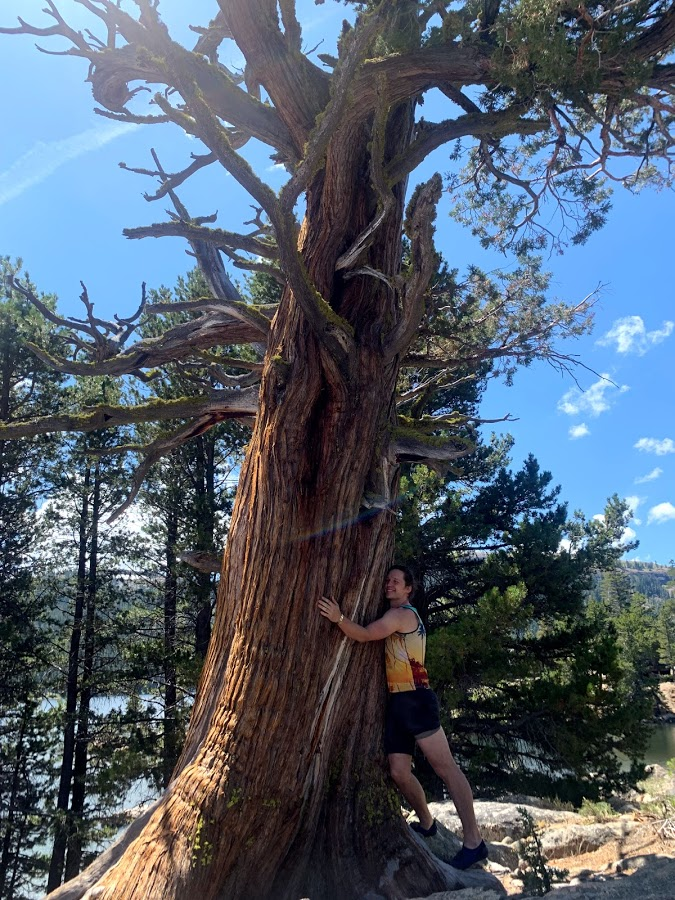

I love this tree

Which Tree Inspires the Most Joy?
"This oak tree and me, we're made of the same stuff."
"You know me, I think there ought to be a big old tree right there. And let's give him a friend. Everybody needs a friend."
"The best time to plant a tree was 20 years ago. The second best time is now.”